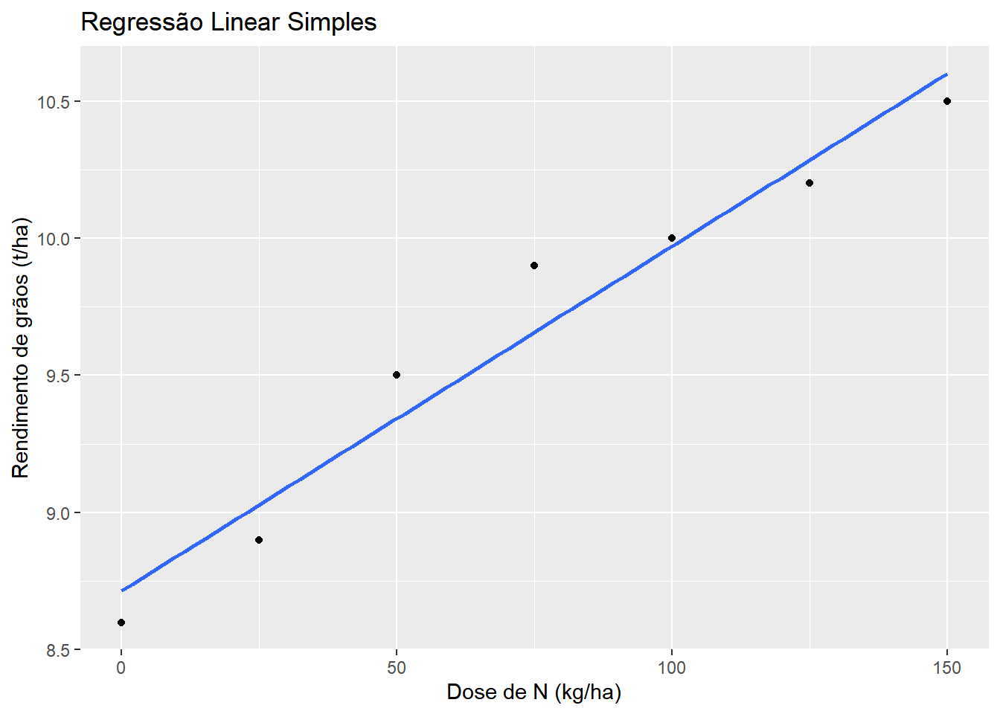
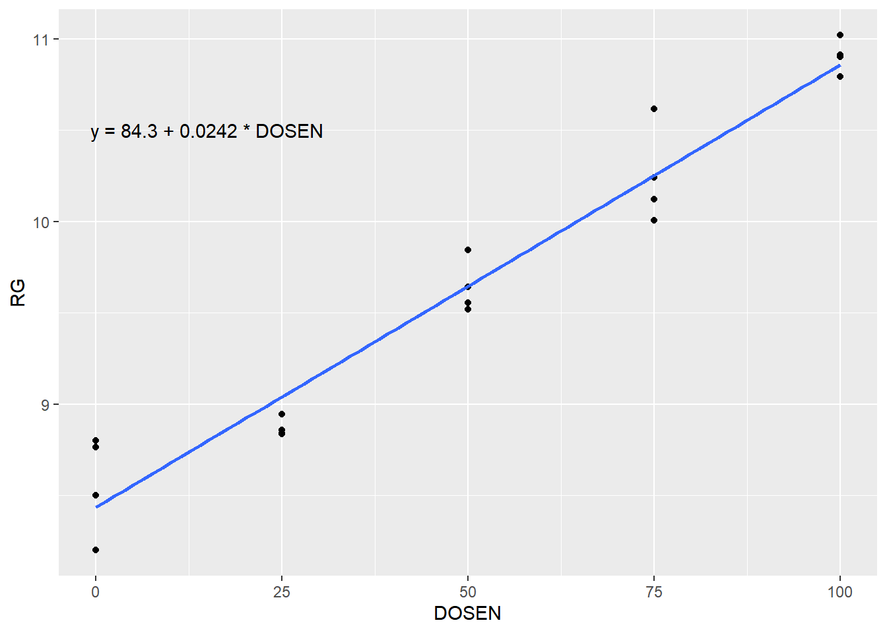
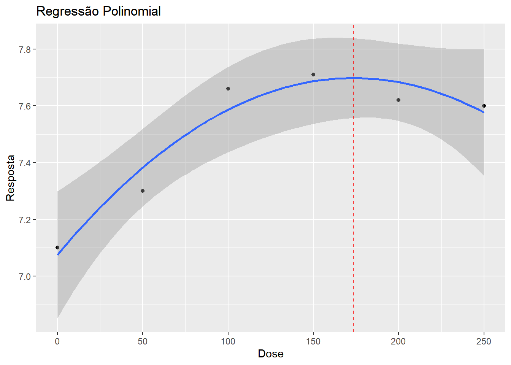
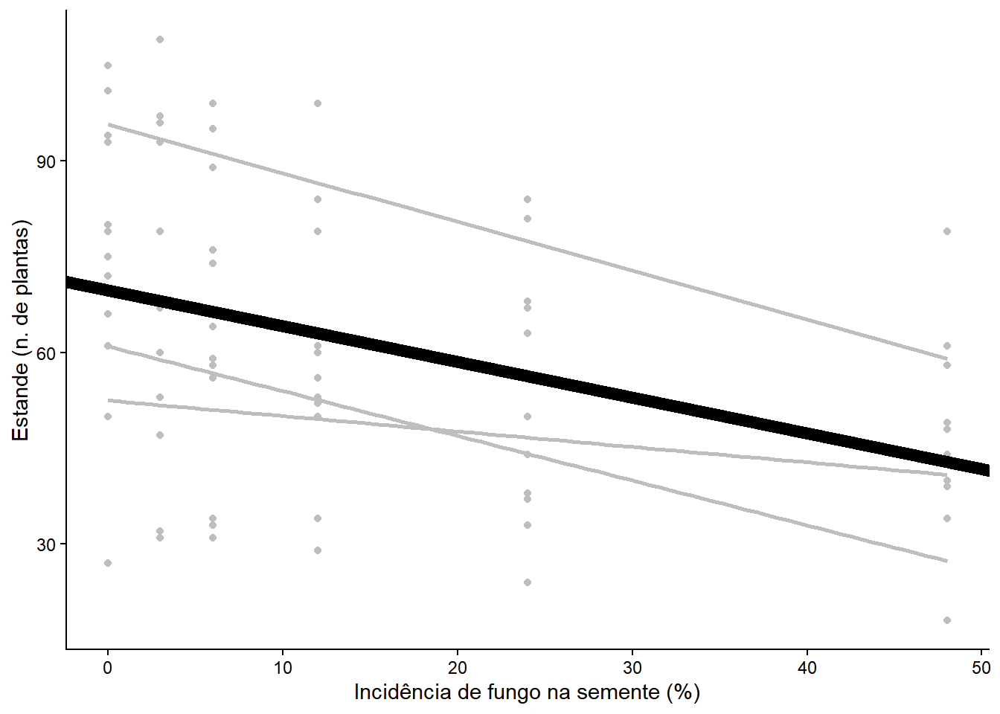
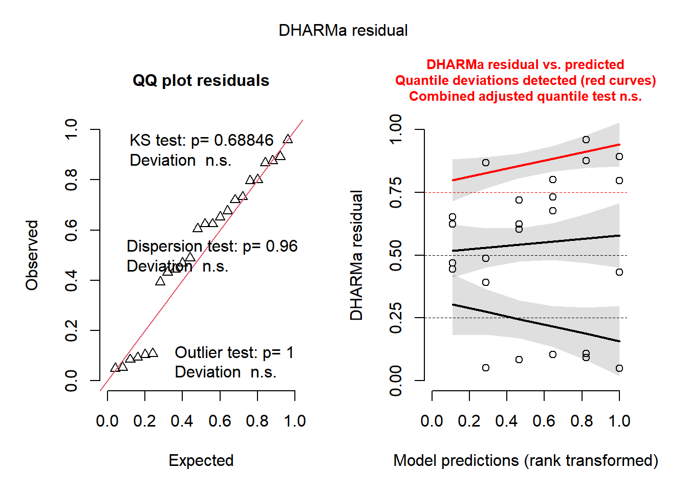
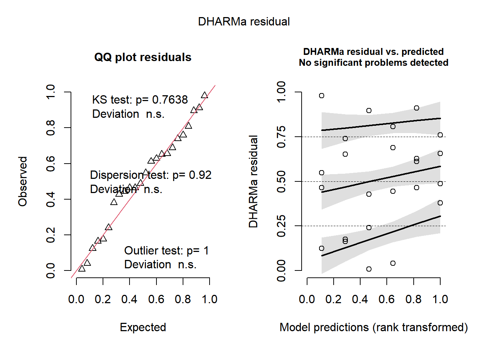

Aula8: Modelos de Regressão, Diagnóstico e Modelos Mistos
Introdução à Regressão Linear Simples
A Regressão Linear Simples é uma técnica estatística usada para modelar a relação entre uma variável dependente contínua (\(Y\)) e uma variável independente contínua (\(X\)). O objetivo é encontrar a reta de melhor ajuste que minimize a soma dos erros quadráticos (diferença entre os valores observados e preditos).
A equação do modelo é dada por: \(Y = \beta_0 + \beta_1X + \epsilon\)
Onde: - \(\beta_0\): Intercepto (valor de \(Y\) quando \(X = 0\)) - \(\beta_1\): Coeficiente angular ou inclinação (variação em \(Y\) para cada unidade de aumento em \(X\)) - \(\epsilon\): Erro aleatório (resíduo)
# Carregando pacotes necessárioslibrary(ggplot2)library(tidyverse)# Criando um conjunto de dados simuladox <-seq(0, 150, by =25) # Variável independente (ex: Dose de Nitrogênio)y <-c(8.6, 8.9, 9.5, 9.9, 10, 10.2, 10.5) # Variável dependente (ex: Rendimento de grãos)df <-data.frame(x = x, y = y)# Visualizando os dados com a reta de regressãodf |>ggplot(aes(x, y)) +geom_point() +# Adiciona os pontos (dados observados)geom_smooth(se =FALSE, method ="lm") +# Adiciona a reta de regressão linearlabs(x ="Dose de N (kg/ha)",y ="Rendimento de grãos (t/ha)",title ="Regressão Linear Simples")

# Ajustando o modelo de regressão linearm1 <-lm(y ~ x, data = df)# Exemplo de predição manual para x = 70x_novo =70y_predito_manual = m1$coefficients[1] + m1$coefficients[2] * x_novoy_predito_manual
(Intercept)
9.594286
# Resumo estatístico do modelosummary(m1)
Call:
lm(formula = y ~ x, data = df)
Residuals:
1 2 3 4 5 6 7
-0.11429 -0.12857 0.15714 0.24286 0.02857 -0.08571 -0.10000
Coefficients:
Estimate Std. Error t value Pr(>|t|)
(Intercept) 8.714286 0.110472 78.88 6.2e-09 ***
x 0.012571 0.001226 10.26 0.000151 ***
---
Signif. codes: 0 '***' 0.001 '**' 0.01 '*' 0.05 '.' 0.1 ' ' 1
Residual standard error: 0.1621 on 5 degrees of freedom
Multiple R-squared: 0.9546, Adjusted R-squared: 0.9456
F-statistic: 105.2 on 1 and 5 DF, p-value: 0.0001513
# Calculando valores preditos e resíduos (erros) para todos os pontospred <- df |>mutate(predito =predict(m1), # Valores de y estimados pelo modeloresidual = y - predito) # Diferença entre y observado e preditopred
Call:
lm(formula = y ~ x, data = df)
Residuals:
1 2 3 4 5 6 7
-0.11429 -0.12857 0.15714 0.24286 0.02857 -0.08571 -0.10000
Coefficients:
Estimate Std. Error t value Pr(>|t|)
(Intercept) 8.714286 0.110472 78.88 6.2e-09 ***
x 0.012571 0.001226 10.26 0.000151 ***
---
Signif. codes: 0 '***' 0.001 '**' 0.01 '*' 0.05 '.' 0.1 ' ' 1
Residual standard error: 0.1621 on 5 degrees of freedom
Multiple R-squared: 0.9546, Adjusted R-squared: 0.9456
F-statistic: 105.2 on 1 and 5 DF, p-value: 0.0001513
# Correlação de Pearson (medida de associação linear entre x e y)z <-cor(df$x, df$y)# Coeficiente de Determinação (R²)# Indica a proporção da variância de Y que é explicada por Xz * z
[1] 0.9546351
Importando e modelando dados reais
library(rio)# Importando dados da weburl <-"https://bit.ly/df_biostat"df_reg <-import(url, sheet ="REG_DEL_DATA", setclass ="tbl")# Ajustando modelo linear simplesm2 <-lm(RG ~ DOSEN, data = df_reg)# Análise de Variância (ANOVA) para o modeloanova(m2)
Analysis of Variance Table
Response: RG
Df Sum Sq Mean Sq F value Pr(>F)
DOSEN 1 14.6676 14.6676 359.44 2.419e-13 ***
Residuals 18 0.7345 0.0408
---
Signif. codes: 0 '***' 0.001 '**' 0.01 '*' 0.05 '.' 0.1 ' ' 1
# Resumo do modelosummary(m2)
Call:
lm(formula = RG ~ DOSEN, data = df_reg)
Residuals:
Min 1Q Median 3Q Max
-0.24520 -0.14343 -0.03798 0.08990 0.36680
Coefficients:
Estimate Std. Error t value Pr(>|t|)
(Intercept) 8.434550 0.078238 107.81 < 2e-16 ***
DOSEN 0.024222 0.001278 18.96 2.42e-13 ***
---
Signif. codes: 0 '***' 0.001 '**' 0.01 '*' 0.05 '.' 0.1 ' ' 1
Residual standard error: 0.202 on 18 degrees of freedom
Multiple R-squared: 0.9523, Adjusted R-squared: 0.9497
F-statistic: 359.4 on 1 and 18 DF, p-value: 2.419e-13
summary(m1)
Call:
lm(formula = y ~ x, data = df)
Residuals:
1 2 3 4 5 6 7
-0.11429 -0.12857 0.15714 0.24286 0.02857 -0.08571 -0.10000
Coefficients:
Estimate Std. Error t value Pr(>|t|)
(Intercept) 8.714286 0.110472 78.88 6.2e-09 ***
x 0.012571 0.001226 10.26 0.000151 ***
---
Signif. codes: 0 '***' 0.001 '**' 0.01 '*' 0.05 '.' 0.1 ' ' 1
Residual standard error: 0.1621 on 5 degrees of freedom
Multiple R-squared: 0.9546, Adjusted R-squared: 0.9456
F-statistic: 105.2 on 1 and 5 DF, p-value: 0.0001513
# Visualizando dados com anotação da equação da retadf_reg |>ggplot(aes(DOSEN, RG)) +geom_point() +geom_smooth(se =FALSE, method ="lm") +annotate(geom ="text",x =15,y =10.5,label ="y = 84.3 + 0.0242 * DOSEN")

Interpretando o Summary do Modelo: Residual standard error: 0.1621 on 5 degrees of freedom. Multiple R-squared: 0.9546, Adjusted R-squared: 0.9456 F-statistic: 105.2 on 1 and 5 DF, p-value: 0.0001513
O Adjusted R-squared (R² Ajustado) de 0.9456 indica que 94,56% da variação de y é explicada pela variável x.
Regressão Polinomial (Quadrática)
Quando a relação não é linear (ex: resposta a doses onde há um máximo ou mínimo), podemos usar um modelo polinomial, como a regressão quadrática.
# Criando dados com comportamento curvoDOSEN <-c(0, 50, 100, 150, 200, 250)RG <-c(7.1, 7.3, 7.66, 7.71, 7.62, 7.6)df2 <-data.frame(DOSEN = DOSEN, RG = RG)# Modelo de regressão quadrática# raw = TRUE informa para usar os dados brutos (x e x^2) ao invés de polinômios ortogonaismod2 <-lm(RG ~poly(DOSEN, 2, raw =TRUE), data = df2)summary(mod2)
Call:
lm(formula = RG ~ poly(DOSEN, 2, raw = TRUE), data = df2)
Residuals:
1 2 3 4 5 6
0.02500 -0.08243 0.07371 0.02343 -0.06329 0.02357
Coefficients:
Estimate Std. Error t value Pr(>|t|)
(Intercept) 7.075e+00 7.013e-02 100.882 2.15e-06 ***
poly(DOSEN, 2, raw = TRUE)1 7.184e-03 1.319e-03 5.445 0.0122 *
poly(DOSEN, 2, raw = TRUE)2 -2.071e-05 5.066e-06 -4.089 0.0264 *
---
Signif. codes: 0 '***' 0.001 '**' 0.01 '*' 0.05 '.' 0.1 ' ' 1
Residual standard error: 0.07738 on 3 degrees of freedom
Multiple R-squared: 0.9389, Adjusted R-squared: 0.8982
F-statistic: 23.06 on 2 and 3 DF, p-value: 0.0151
# Comparação: Modelo Linear vs Quadráticom3 <-lm(RG ~ DOSEN, data = df2)summary(m3)
Call:
lm(formula = RG ~ DOSEN, data = df2)
Residuals:
1 2 3 4 5 6
-0.14762 -0.04790 0.21181 0.16152 -0.02876 -0.14905
Coefficients:
Estimate Std. Error t value Pr(>|t|)
(Intercept) 7.2476190 0.1243507 58.284 5.19e-07 ***
DOSEN 0.0020057 0.0008214 2.442 0.0711 .
---
Signif. codes: 0 '***' 0.001 '**' 0.01 '*' 0.05 '.' 0.1 ' ' 1
Residual standard error: 0.1718 on 4 degrees of freedom
Multiple R-squared: 0.5985, Adjusted R-squared: 0.4981
F-statistic: 5.962 on 1 and 4 DF, p-value: 0.07108
m4 <-lm(RG ~poly(DOSEN, 2, raw =TRUE), data = df2)summary(m4)
Call:
lm(formula = RG ~ poly(DOSEN, 2, raw = TRUE), data = df2)
Residuals:
1 2 3 4 5 6
0.02500 -0.08243 0.07371 0.02343 -0.06329 0.02357
Coefficients:
Estimate Std. Error t value Pr(>|t|)
(Intercept) 7.075e+00 7.013e-02 100.882 2.15e-06 ***
poly(DOSEN, 2, raw = TRUE)1 7.184e-03 1.319e-03 5.445 0.0122 *
poly(DOSEN, 2, raw = TRUE)2 -2.071e-05 5.066e-06 -4.089 0.0264 *
---
Signif. codes: 0 '***' 0.001 '**' 0.01 '*' 0.05 '.' 0.1 ' ' 1
Residual standard error: 0.07738 on 3 degrees of freedom
Multiple R-squared: 0.9389, Adjusted R-squared: 0.8982
F-statistic: 23.06 on 2 and 3 DF, p-value: 0.0151
# Encontrando o ponto de máximo da curva (derivada primeira igual a zero)b <-coef(m4)[2] # Coeficiente lineara <-coef(m4)[3] # Coeficiente quadráticodose_max =-b / (2* a)dose_max
poly(DOSEN, 2, raw = TRUE)1
173.4138
# Visualização do ajuste quadrático e o ponto de dose máximadf2 |>ggplot(aes(DOSEN, RG)) +geom_point() +geom_smooth(method ="lm", se =TRUE,formula = y ~poly(x, 2)) +geom_vline(xintercept = dose_max, linetype ="dashed", color ="red") +labs(title ="Regressão Polinomial", x ="Dose", y ="Resposta")

Diagnóstico de Modelos e Modelos Lineares Generalizados (GLM)
Em muitas situações agronômicas ou biológicas (como dados de contagem), as premissas da regressão clássica são violadas. Usamos transformações matemáticas (ex: raiz quadrada) ou Modelos Lineares Generalizados (GLM) e inspecionamos os resíduos para validação.
library(readxl)library(DHARMa)# carregar dados externos estande <-read_excel("dados_diversos.xlsx", sheet ="estande")# Visualização exploratória geralprint(estande |>ggplot(aes(trat, nplants, group = exp)) +geom_point(color ="gray") +geom_abline(intercept =69.74, slope =-0.56, linewidth =3, color ="black") +geom_smooth(se =FALSE, method ="lm", color ="gray") +theme_classic() +theme(legend.position ="bottom") +labs(x ="Incidência de fungo na semente (%)",y ="Estande (n. de plantas)"))

# Analisando Experimento 1: Comparando LM transformado vs GLM exp1 <- estande |>filter(exp ==1)# Modelo Linear com variável dependente transformada m1 <-lm(sqrt(nplants) ~ trat, data = exp1)print(anova(m1))
Analysis of Variance Table
Response: sqrt(nplants)
Df Sum Sq Mean Sq F value Pr(>F)
trat 1 1.5431 1.5431 1.2692 0.2721
Residuals 22 26.7467 1.2158
print(summary(m1))
Call:
lm(formula = sqrt(nplants) ~ trat, data = exp1)
Residuals:
Min 1Q Median 3Q Max
-1.9397 -0.4386 0.1782 0.6684 1.7986
Coefficients:
Estimate Std. Error t value Pr(>|t|)
(Intercept) 7.13583 0.30907 23.088 <2e-16 ***
trat -0.01540 0.01367 -1.127 0.272
---
Signif. codes: 0 '***' 0.001 '**' 0.01 '*' 0.05 '.' 0.1 ' ' 1
Residual standard error: 1.103 on 22 degrees of freedom
Multiple R-squared: 0.05455, Adjusted R-squared: 0.01157
F-statistic: 1.269 on 1 and 22 DF, p-value: 0.2721
print(AIC(m1))
[1] 76.70963
plot(simulateResiduals(m1)) # Diagnóstico de resíduos usando pacote DHARMa

# Modelo Linear Generalizado (GLM) - útil para não-normalidade e outras distribuições m11 <-glm(sqrt(nplants) ~ trat, data = exp1)print(anova(m11))
Analysis of Deviance Table
Model: gaussian, link: identity
Response: sqrt(nplants)
Terms added sequentially (first to last)
Df Deviance Resid. Df Resid. Dev F Pr(>F)
NULL 23 28.290
trat 1 1.5431 22 26.747 1.2692 0.2721
print(summary(m11))
Call:
glm(formula = sqrt(nplants) ~ trat, data = exp1)
Coefficients:
Estimate Std. Error t value Pr(>|t|)
(Intercept) 7.13583 0.30907 23.088 <2e-16 ***
trat -0.01540 0.01367 -1.127 0.272
---
Signif. codes: 0 '***' 0.001 '**' 0.01 '*' 0.05 '.' 0.1 ' ' 1
(Dispersion parameter for gaussian family taken to be 1.21576)
Null deviance: 28.290 on 23 degrees of freedom
Residual deviance: 26.747 on 22 degrees of freedom
AIC: 76.71
Number of Fisher Scoring iterations: 2
Analysis of Variance Table
Response: sqrt(nplants)
Df Sum Sq Mean Sq F value Pr(>F)
trat 1 12.2843 12.2843 34.991 5.94e-06 ***
Residuals 22 7.7236 0.3511
---
Signif. codes: 0 '***' 0.001 '**' 0.01 '*' 0.05 '.' 0.1 ' ' 1
plot(simulateResiduals(m3))

Modelos Lineares Mistos
Quando há estruturas de agrupamento ou medidas repetidas, utilizamos modelos mistos. Eles lidam simultaneamente com efeitos fixos (interesse principal, como tratamentos) e efeitos aleatórios (fontes de variação como blocos, anos ou locais).
A notação (1 | exp/bloco) indica que há interceptos aleatórios para experimento e bloco aninhado dentro de experimento.
library(lme4)# Ajustando o modelo misto m_mix <-lmer(nplants ~ trat + (1| exp/bloco), data = estande) # Resumo do modelo (Estimativas para efeitos fixos e variâncias para efeitos aleatórios)print(summary(m_mix))
Linear mixed model fit by REML ['lmerMod']
Formula: nplants ~ trat + (1 | exp/bloco)
Data: estande
REML criterion at convergence: 575.8
Scaled residuals:
Min 1Q Median 3Q Max
-2.21697 -0.63351 0.04292 0.67094 1.92907
Random effects:
Groups Name Variance Std.Dev.
bloco:exp (Intercept) 54.76 7.40
exp (Intercept) 377.43 19.43
Residual 134.99 11.62
Number of obs: 72, groups: bloco:exp, 12; exp, 3
Fixed effects:
Estimate Std. Error t value
(Intercept) 69.74524 11.57191 6.027
trat -0.56869 0.08314 -6.840
Correlation of Fixed Effects:
(Intr)
trat -0.111